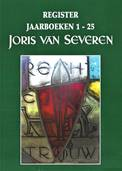

> jaarboek > Namenregister
over de jaarboeken 1 - 25

Naast de uitgave
van het 25e Jaarboek Joris van Severen realiseerden we voor
2021 ook de uitgave van een uitgebreid Register (120 pagina’s) van
alle persoonsnamen die in de jaarboekenreeks 1 tot en met 25 terug
te vinden zijn. Dit Register wordt – zonder
meerprijs - als bijlage bij het Jaarboek 25 (2021) aan alle leden
toegestuurd. Naderhand – eens het Jaarboek 25 (2021) verschenen is
– zullen we voor dit Register een (nog te bepalen)
kostprijs dienen aan te rekenen. Het is dus zaak er tijdig bij te
zijn, m.a.w. de ledenbijdrage zo spoedig alsnog te vereffenen.